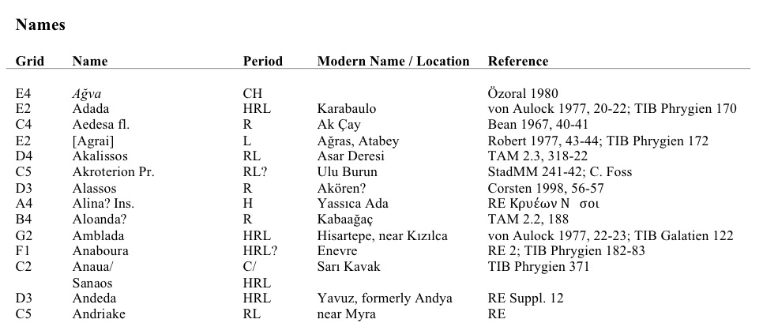
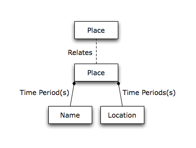

Pleiades: an un-GIS for Ancient Geography
Sean Gillies
Institute for the Study of the Ancient World, New York University
Overview
- Objectives
- Contributors and users
- Entities and resource design
- Lessons learned
- What sort of Gazetteer are we?
This is what we'll talk about.
Objectives
- Continue the work of the Classical Atlas Project
- Inventory ancient place names and related locations
- Make these resources widely available and editable
- Promote discovery and integration of ancient world resources
.
Institutions
- Institute for the Study of the Ancient World
- Stoa Consortium
- Ancient World Mapping Center
- Funding: the National Endowment for the Humanities
- Partner: the Digital Atlas of Roman and Medieval Civilization
http://www.nyu.edu/isaw, http://awmc.unc.edu, http://www.neh.gov,
http://darmc.harvard.edu
Contributors
- Senior Editors: Roger Bagnall (NYU) and Richard Talbert (UNC)
- Managing Editors: Tom Elliott (NYU) and Brian Turner (UNC)
- Associate Editor: Michael McCormick (Harvard)
- Chief Engineer: Sean Gillies (NYU)
- 12 individual contributors
A tabular view of contributors is forthcoming.
Users
- Inscriptions of Roman Cyrenaica (KCL-CCH)
- Epigraphische Datenbank Heidelberg
- Nomisma.org (ANS)
- Portable Antiquities Scheme (UK)
- Google Ancient Places
- Arachne (DAI)
- Perseus Digital Library
- Regnum Francorum Online
Largely separate from contributors.
Origins
Barrington Atlas directory
We begin with very little. What kind of gazetteer is this?
Design Principles
- Fewest number of entity types
- Too general is better than too specific
- Choose constraints carefully
- Scalability
"Worse is better"
Entities
- Places are a context for names, locations
- Graph, not table storage
Originally, we had a Feature entity, too. Eliminated before we did mass creation
of places.
Instances
- Unnamed places
- Unlocated places
- Fuzzy or imprecise places
- Places with determinable – but YAGNI – locations
A river has a determinable course and basin, but "you aren't going to need it".
Attributes
- Metadata (Dublin Core)
- References
- Publication state
- Revision history
- Attested time periods
- Other
Each entity has a small amount of specific attributes.
Attributes of Names
- Language and writing system
- Attested form
- Transliteration
- Accuracy of transcription
- Completeness of transcription
- Certainty in association with a place
- Evidence in ancient text
Names are our richest entity.
Aphrodisias

From http://pleiades.stoa.org/places/638753/aphrodisias.
Ἀφ[ρ]ο̣δισιάδος

Inscriptions of Aphrodisias
From http://insaph.kcl.ac.uk/iaph2007/iAph040202.html.
Evidence for Coria

Vindolanda Tablets Online
From http://vindolanda.csad.ox.ac.uk/TVII-154.
Resources and Representations
- The web matters
- Give everything a URI
- Coriosopitum/Coria: http://pleiades.stoa.org/places/89152
- Coria: http://pleiades.stoa.org/places/89152/coria
- Web clients (browsers, spiders, javascript code) interact with representations
Addressibility, unique and sharable identifiers.
Missteps
- Features are a map, not gazetteer concept
- Aggregation of names and locations (vs composition)
- Waiting for precise coordinates: enough imperfect data is useful
- Fine-grained resources not ideal for mapping many names in texts
- Are we stumbling into an an encyclopedia?
- Is our "Place" something else?
We've made a few and we'll make more.
What kind of Gazetteer?
- "Place" context yields properties of a historical gazetteer
- Some users want properties of an richer, encyclopedic gazetteer
- Network relationships between places are interesting to users
- Part/whole relationships are possible, but undeveloped
Is it okay to straddle types of gazetteers? Will it sow confusion?
Conclusion
- Pleiades remains relevant
- 12 institutions, 12 individuals
- Guided by architecture of the web
- Embrace being a historical gazetteer
- Keep it simple, publish early and often
- Pleiades can still be a richer, better gazetteer
What we've talked about